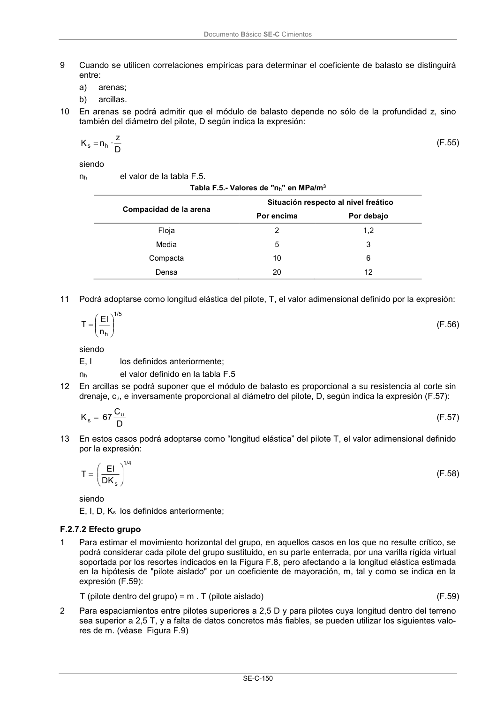

DB-SE-C · Página 155 · versión 2019-12-20
SHA256: a71133f4b0dca253e45ea3071c70f2a512354bcc5cd841bf89b1a502f567ac5e · página física 155 de 165 · métodos de encabezado
solo si están cotejados.
Documento · ← p. 154 · p. 156 →
Formatos: Markdown · JSON de bloques · PDF p. 155 · imagen PNG
Documento Básico SE-C Cimientos SE-C-150 9 Cuando se utilicen correlaciones empíricas para determinar el coeficiente de balasto se distinguirá entre: a) arenas; b) arcillas. 10 En arenas se podrá admitir que el módulo de balasto depende no sólo de la profundidad z, sino también del diámetro del pilote, D según indica la expresión: D z · n K h s (F.55) siendo nh el valor de la tabla F.5. Tabla F.5.- Valores de "nh" en MPa/m3 Compacidad de la arena Situación respecto al nivel freático Por encima Por debajo Floja 2 1,2 Media 5 3 Compacta 10 6 Densa 20 12 11 Podrá adoptarse como longitud elástica del pilote, T, el valor adimensional definido por la expresión: h 1/5 n EI T (F.56) siendo E, I los definidos anteriormente; nh el valor definido en la tabla F.5 12 En arcillas se podrá suponer que el módulo de balasto es proporcional a su resistencia al corte sin drenaje, cu, e inversamente proporcional al diámetro del pilote, D, según indica la expresión (F.57): D C 67 K u s (F.57) 13 En estos casos podrá adoptarse como “longitud elástica” del pilote T, el valor adimensional definido por la expresión: s 1/4 DK EI T (F.58) siendo E, I, D, Ks los definidos anteriormente; F.2.7.2 Efecto grupo 1 Para estimar el movimiento horizontal del grupo, en aquellos casos en los que no resulte crítico, se podrá considerar cada pilote del grupo sustituido, en su parte enterrada, por una varilla rígida virtual soportada por los resortes indicados en la Figura F.8, pero afectando a la longitud elástica estimada en la hipótesis de "pilote aislado" por un coeficiente de mayoración, m, tal y como se indica en la expresión (F.59): T (pilote dentro del grupo) = m . T (pilote aislado) (F.59) 2 Para espaciamientos entre pilotes superiores a 2,5 D y para pilotes cuya longitud dentro del terreno sea superior a 2,5 T, y a falta de datos concretos más fiables, se pueden utilizar los siguientes valo- res de m. (véase Figura F.9)
